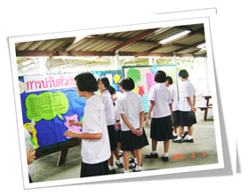

การบริการวิชาการ

ภาควิชาสุขภาพจิตและการพยาบาลจิตเวชศาสตร์ มุ่งมั่นในการนำองค์ความรู้ความเชี่ยวชาญเฉพาะทางไปถ่ายทอดและจัดกิจกรรมบริการวิชาการแก่สังคม เพื่อสนับสนุนการดูแลและส่งเสริมสุขภาวะทางจิตของประชาชนในทุกช่วงวัย รวมถึงสร้างเครือข่ายความร่วมมือทางวิชาชีพในระดับชาติและสากล
เสาหลักการบริการวิชาการ
1. ส่งเสริมสุขภาพจิตประชาชน
- จัดโครงการให้คำปรึกษาแก่บุคลากร นักศึกษา และบุคคลทั่วไป
- ให้บริการผ่าน Line Official "NS พลังใจ"
- ช่องทางติดต่อโทรศัพท์ 089-6861316 หรือทาง Facebook ภาควิชาฯ
2. ที่ปรึกษาโครงการวิจัย
- เป็นที่ปรึกษาโครงการวิจัยและวิชาการแก่สถาบันภายนอก
- ร่วมพัฒนาแนวปฏิบัติทางการพยาบาลในโรงพยาบาลต่างๆ
3. เครือข่ายพัฒนาหลักสูตร
- ร่วมกับกรมสุขภาพจิต (สถาบันกัลยาณ์ฯ, สถาบันสมเด็จเจ้าพระยา, รพ.ศรีธัญญา) จัดหลักสูตรการพยาบาลเฉพาะทาง
- ร่วมกับ รพ.ยุวประสาทไวทโยถัมภ์ พัฒนาหลักสูตรเฉพาะทางเด็กและวัยรุ่น
4. อบรมระยะสั้นเฉพาะทาง
- จัดฝึกอบรมเชิงปฏิบัติการทางจิตวิทยาและจิตเวชแก่พยาบาลวิชาชีพ
- การดูแลประคับประคองจิตใจผู้ป่วยโรคเรื้อรังและจิตเวชชุมชน
โครงการบริการวิชาการแก่สังคมที่ผ่านมา (2563 - 2565)
-
2565ให้ความรู้แก่นักเรียนและผู้สนใจทั่วไป เรื่อง “Major depressive disorder what to know & how to cope”
-
2565ให้ความรู้แก่ผู้สนใจทั่วไปใน Webinar Meeting โดย National University of Singapore เรื่อง "Prototype development and pilot testing of the "MU My Mind" programme"
-
2565ให้ความรู้เชิงปฏิบัติแก่อาจารย์คณะพยาบาลศาสตร์ มหาวิทยาลัยมหิดล เรื่อง “การพัฒนาอาจารย์ให้มีสมรรถนะ empathic listening”
-
2565ให้ความรู้เชิงปฏิบัติแก่อาจารย์พยาบาล วิทยาลัยพยาบาลกองทัพบก เรื่อง “ค้นหาความเข้าใจผ่านการฟังแบบ empathic listening”
-
2565ให้ความรู้แก่อาจารย์ นักศึกษา และผู้ที่สนใจ มหาวิทยาลัยศรีปทุม เรื่อง “สุขกายสุขใจ ปรับอย่างไรในยุคโควิด”
-
2565ให้ความรู้ผ่านเรื่องเล่าเร้าพลังจากประสบการณ์ของอาจารย์ในคณะพยาบาลศาสตร์แก่อาจารย์ และผู้สนใจทั่วไป เรื่อง “การรับมือกับนักศึกษา Gen Z”
-
2564ให้บริการการปรึกษา...สุขภาพใจแก่นักศึกษา บุคลากร และบุคคลทั่วไป ให้บริการผ่าน Line official “NS พลังใจ”
-
2564ให้บริการการปรึกษา “เพิ่มพลังใจแก่ผู้ติดเชื้อโควิด-19” (Home isolation) ผ่าน Line official “NS พลังใจ”
-
2564ให้บริการปรึกษา Hot line ส่งเสริมสุขภาพใจ คนไทยรับมือ Covid-19
-
2564ให้บริการการคัดกรองและฉีดวัคซีน ในโครงการ “NS จิตอาสา หยุดเชื้อช่วยชาติ”
-
2564ให้ความรู้ผ่าน Facebook live ในโครงการ "พยาบาลมหิดลร่วมใจ ช่วยคนไทยปลอดภัยจากโควิด-19" หัวข้อการดูแลสุขภาพใจผู้สูงวัยและจิตใจในวิกฤติโควิด
-
2564ให้ความรู้แก่นักศึกษาระดับบัณฑิตศึกษา เรื่อง “ปรับใจให้เป็นสุขในการเรียนและการทำงานยุคโควิด” และ “Empower your Mental health during Covid-19 pandemic”
-
2564ให้ความรู้แก่เจ้าหน้าที่หลักสูตร มหาวิทยาลัยมหิดล เรื่อง “การดูแลและช่วยเหลือนักศึกษาที่มีปัญหาด้านสุขภาพใจ”
-
2563ให้ความรู้แก่ครูโรงเรียนกรุงเทพคริสเตียนวิทยาลัย เรื่อง “ทักษะการให้การปรึกษา”
-
2563ให้ความรู้แก่นักเรียนแกนนำโรงเรียนทีปังกรพิทยาพัฒน์ และโรงเรียนกาญจนาภิเษกวิทยาลัย เรื่อง “ทักษะการให้การปรึกษา”
-
2563ให้ความรู้แก่ครูที่เข้าร่วมโครงการบริการวิชาการ “ครูเพศวิถีพันธุ์ใหม่สำหรับวัยรุ่น เรื่อง “การให้คำปรึกษาสุขภาพทางเพศ”
-
2563ให้ความรู้แก่ผู้ฝึกสอนและผู้ตัดสินกีฬาเทเบิลเทนนิส สมาคมกีฬาคนพิการทางปัญญาแห่งประเทศไทย เรื่อง “ภาวะบกพร่องทางปัญญา รู้จัก เข้าใจ พัฒนา”